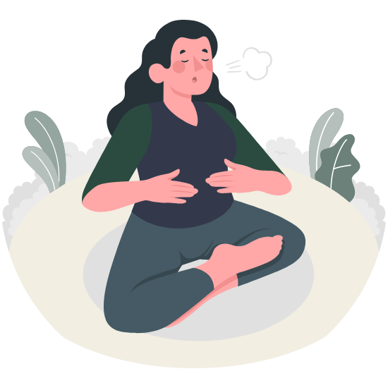
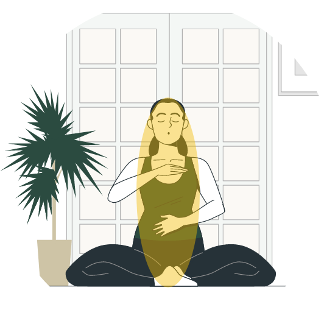
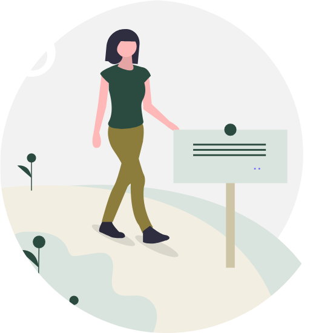

Time To Be Presently
Ready to cultivate more calm and clarity in your daily life? Dive into these beginner-friendly mindfulness techniques you can practice every day. The following instructions will guide you step-by-step through each exercise, helping you experience the benefits of mindfulness firsthand.

Mindful Breathing
Find a quiet space
Choose a comfortable and quiet environment where you won't be interrupted. Sit in a chair with your back straight or lie down on a yoga mat or bed, whatever feels comfortable.
Set a timer
If you're new to meditation, set a timer for 5-10 minutes to guide your practice. With experience, you can gradually increase the duration.
Close your eyes
This helps reduce distractions, but you can keep them open if that feels more comfortable.
Focus on your breath
Gently bring your attention to your natural breath. Notice the sensation of your breath entering and leaving your nostrils or chest. Don't try to control your breath, simply observe it.
Wandering mind
It's natural for your mind to wander during meditation. Don't judge yourself; simply acknowledge the thought and gently bring your attention back to your breath.
End practice
When the timer goes off (or when you're ready), take a few moments to sit quietly. Notice any bodily sensations or sounds around you. Then, slowly open your eyes and take a few deep breaths before returning to your day.

Body Scan Meditation
Find a comfortable position
Lie down on your back on a yoga mat or bed, or sit comfortably in a chair. Close your eyes.
Body awareness
Take a few moments to become aware of your entire body resting on the surface.
Scan your body
Begin by focusing your attention on your toes. Notice any sensations in your toes, like tingling, warmth, or pressure – without judgment.
Slowly move upward
Gradually move your attention upwards, focusing on each body part in turn. Scan your feet, ankles, calves, and so on, all the way up to your head.
Observe sensation
Notice any sensations you experience in each body part – tension, relaxation, warmth, coolness, etc.
End practice
Once you've scanned your entire body, take a few moments to lie or sit quietly, observing any overall sensations. Then, slowly open your eyes (if closed) and return to your day.

Mindful Walking Meditation
Find a walking space
Choose a quiet space where you can walk comfortably for a few minutes. It could be indoors or outdoors.
Slow down
Begin walking at a slow and deliberate pace. Focus on the feeling of your feet making contact with the ground.
Body awareness
Pay attention to the physical sensations in your body as you walk. Notice the movement of your legs, the rise and fall of your chest, and the rhythm of your breath.
Engage your senses
Be mindful of your surroundings. Notice sights, sounds, smells, and even the temperature on your skin.
Present moment
If your mind wanders to thoughts about the past or future, gently acknowledge them and bring your attention back to the present moment sensations of walking.
End practice
After a few minutes of mindful walking, stop and stand still for a moment. Notice how your body feels. Then, continue with your day with a renewed sense of presence.
Uni-tasking
Choose a task
Select a single task you need to complete, such as writing an email, doing homework, or washing dishes.
Minimize distractions
Put your phone on silent and close any unnecessary browser tabs or applications. Inform others around you that you'll need focused time to complete the tas
Body awareness
Pay attention to the physical sensations in your body as you walk. Notice the movement of your legs, the rise and fall of your chest, and the rhythm of your breath.
Be present
As you begin the task, give it your full attention. Focus on each step of the process and avoid thinking about what you need to do next.
Notice distractions
When your mind wanders or you reach for your phone, acknowledge the distraction without judgment. Gently refocus your attention on the task at hand.
Celebrate completion
Once you've completed the task, take a moment to appreciate your accomplishment. This reinforces the benefits of single-tasking and motivates you to continue practicing.